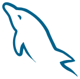
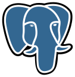
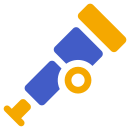
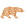

Pasarela web autoalojada para administrar servidores: terminal SSH, explorador SFTP, registro de servidores con jump hosts, sesiones compartidas en directo, grabación de sesiones, LDAP/AD, 2FA y despliegue en alta disponibilidad.
 Wireless DNA Tech Lead · Palma de Mallorca
Wireless DNA Tech Lead · Palma de Mallorca
Construyo plataformas de datos que no se caen y las herramientas para operarlas.
Lidero el equipo de Automatización de Wireless DNA: una plataforma distribuida que lleva los datos de red de operadores móviles de la antena al panel. Más de 8 años en ella. En mi tiempo libre publico librerías y aplicaciones open source en Python.
Kevin Alexander Nolasco PajueloAlex Nolasco
 Tech Lead, equipo de AutomatizaciónWireless DNA · desde 2018
Tech Lead, equipo de AutomatizaciónWireless DNA · desde 2018- Ingeniería Telemática y MatemáticasDos grados · Universitat de les Illes Balears
- Apache Airflow 3 FundamentalsCertificación de Astronomer
8+años construyendo la plataforma
9.000+commits propios en 55 repositorios
12.000+horas en 630+ tareas de 70 proyectos
13fabricantes de red integrados en el ETL
17.000+pruebas automáticas
86herramientas MCP para agentes de IA
La plataforma que dirijo
Datos de red de operadores móviles, de la antena al panel. El detalle de cada etapa está en mi CV.
Red
13 fabricantes
Ericsson
 Nokia
Huawei
Nokia
Huawei
Procesamiento
40× parser Nokia más rápido
Airflow
 Python
Python
 Rust
Rust
 Celery
Celery
Datos
99,99 % paridad
 ClickHouse
ClickHouse

MySQL
PostgreSQL
Operación
86 herramientas MCP
 Docker
Docker
 Grafana
Grafana
 Keycloak
Keycloak

OTel
Mi CV, en una página
La plataforma, lo que hice en cada etapa, la trayectoria y la formación. En español y en inglés, en web y en PDF.
01Sobre mí
Soy Tech Lead del equipo de Automatización de Wireless DNA. Tomo las decisiones de arquitectura y de stack de una plataforma que procesa datos de red de telecomunicaciones, de estaciones meteorológicas y de sensores IoT, y la llevamos de punta a punta: código, despliegue en varios servidores y monitorización.
Me importan la estabilidad antes que la velocidad, las decisiones documentadas y las herramientas que hacen que operar un sistema complejo sea aburrido, en el buen sentido.
- FiabilidadReleases inmutables, rollback y alarmas útiles.
- AutomatizaciónInventario como código: un despliegue es un comando.
- ObservabilidadMétricas y logs que responden preguntas reales.
02Experiencia
-
Tech Lead · Equipo de Automatización
Wireless DNA · mar. 2023 – actualidad · Palma de Mallorca
Lidero la plataforma distribuida de procesamiento de datos de WDNA, con foco en telecomunicaciones: datos de rendimiento y configuración de la red de operadores móviles, miles de elementos de red y varios fabricantes.
- Arquitectura modular de la plataforma (telecom, meteorología, IoT y una base común), adoptada como estándar en la empresa.
- ETL de datos de red con Apache Airflow 3 y Celery: lectura, transformación y carga de contadores de varios fabricantes, con parsers nativos en Rust para los ficheros más grandes.
- Almacenamiento en ClickHouse, MySQL/Percona y PostgreSQL con Patroni, con replicación y recuperación ante fallos.
- Infraestructura como código: inventario declarativo, contenedores Docker y despliegues con releases inmutables, verificación por checksum y rollback.
- Observabilidad: OpenTelemetry hacia ClickHouse, paneles propios y en Grafana, y un centro de alarmas con avisos a Teams y correo.
- Seguridad y acceso: inicio de sesión único con Keycloak (OIDC) y un vault de credenciales cifradas.
- IA aplicada a operaciones: 7 servidores MCP de solo lectura (86 herramientas) y un agente de soporte para el NOC que responde con datos reales de producción.
- Migración a la versión 4 sin parar el servicio: 13 fabricantes de RAN, Core y Transporte, validados frente a producción (hasta un 99,99 % de ficheros en un día completo) y documentados en 59 decisiones de arquitectura (ADR).
- Rendimiento: configuración Nokia de 5 a 40 veces más rápida (3G en 50 s frente a 36 min), 3,17 GB de configuración 5G leídos en 47 s, y purgas que pasan de borrados masivos a operaciones instantáneas con particionado.
-
Ingeniero de software · Datos y automatización
Wireless DNA · feb. 2019 – feb. 2023 · ParcBit
Pipelines ETL para datos de redes de telecomunicaciones desde múltiples fuentes (SNMP, SFTP, bases relacionales y de series temporales), automatización de servidores y servicios con Python y Bash, contenedores Docker y librerías compartidas de acceso a datos, credenciales y monitorización.
-
Ingeniero de operaciones
Wireless DNA · ago. 2018 – ene. 2019
Monitorización de red e infraestructura para clientes de telecomunicaciones. A los 6 meses pasé al equipo de desarrollo por mi trabajo en automatización y scripting.
-

Big Data Engineer (prácticas)
XML Travelgate · may. – sept. 2017 · Palma
Ámbitos en los que he trabajado
TelecomunicacionesETL de rendimiento, configuración y alarmas de operadores móviles; herramientas de capacidad para RAN, Core y Transporte; detección de anomalías y previsión.
MeteorologíaEstaciones meteorológicas, radar, satélite y observaciones no convencionales; motor de previsión y apps de meteo.
IoT y ciudad inteligenteGestión de residuos con 5G, sensores, SmartWorld y plataformas de dispositivos conectados.
Plataforma internaPasarela de comunicaciones, monitorización, consola de operación, intranet y herramientas de desarrollo.
03Proyectos open source
Librería de Python para systemd: servicios, unidades, journal, límites de recursos y análisis de seguridad. Asíncrona con envoltorios síncronos, backend D-Bus opcional, CLI y una TUI en Rust.
IronFlet
★ 1Registro de entrenamiento de fuerza, offline y bilingüe: 7 rutinas periodizadas y 68 ejercicios con imágenes animadas. Un único código Python que corre como APK de Android, escritorio y web.
Un carril rápido para cambios pequeños con agentes de IA: edición mínima, comprobaciones dirigidas, revisión breve y commits acotados. Agent Skills para Claude Code, Codex y otros.
04Formación
Grado en Ingeniería Telemática
Universitat de les Illes Balears (UIB) · 2013 – 2020
Grado en Matemáticas
Universitat de les Illes Balears (UIB) · 2013 – 2020
Intercambio en Ingeniería Informática
Universidad de Guadalajara, México · 2018
Beca SantanderApache Airflow 3 Fundamentals
Certificación de Astronomer · 2025
Idiomas
Español nativo · Catalán básico · Inglés básico
05Stack

PolarsLenguajes
Infraestructura
Seguridad
Web, APIs e IA
¿Hablamos?
Si te interesa lo que hago, tienes una oportunidad o quieres colaborar en alguno de los proyectos, escríbeme.